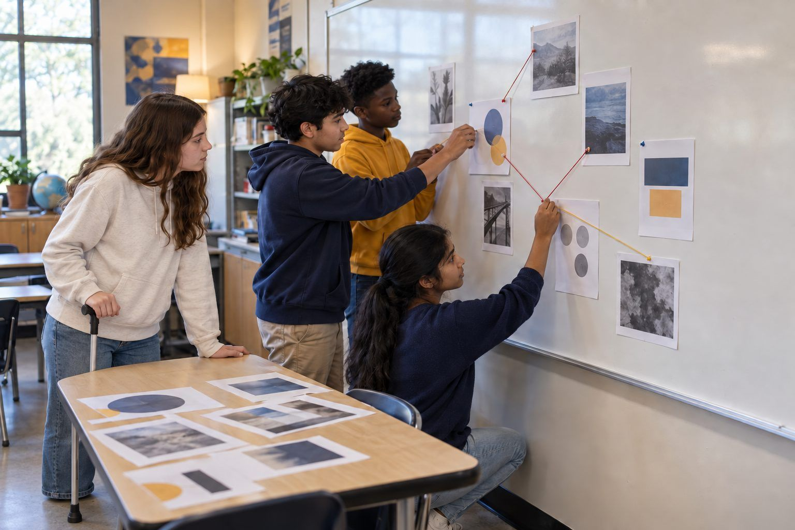

Học tập của học sinh · Lớp 6–8, Lớp 9–12 · 50 phút
Hiểu dữ liệu qua bảng tính
Học sinh biến một cuộc khảo sát về bữa trưa thành bảng tính hoặc bảng kẻ ô trên giấy, tính số lượng và trung bình, vẽ một biểu đồ trung thực, rồi phát hiện và sửa những biểu đồ (và một gợi ý biểu đồ của AI) gây hiểu lầm vì trục bị cắt bớt hoặc khoảng dữ liệu bị chọn lọc có chủ ý.
Biểu đồ xuất hiện ở khắp nơi học sinh nhìn thấy: bản tin của trường, quảng cáo, bài báo, bài đăng trên mạng xã hội, và ngày càng nhiều hơn là các công cụ AI đề nghị "vẽ biểu đồ giúp bạn". Trong bài học này, học sinh trở thành nhóm dữ liệu cho căng tin của trường trung học cơ sở hư cấu Cedar Ridge Middle School. Các em nhập 24 câu trả lời khảo sát vào bảng tính (hoặc bảng kẻ ô trên giấy), đếm các món được yêu thích và tính trung bình điểm đánh giá thực đơn, rồi vẽ một biểu đồ trung thực. Sau đó, các em gặp hai biểu đồ bắt mắt dùng cùng loại dữ liệu để kể một câu chuyện gây hiểu lầm, một biểu đồ có trục bị cắt bớt và một biểu đồ có khoảng dữ liệu được chọn lọc, cùng với một gợi ý biểu đồ đầy tự tin của AI nhưng tính toán sai. Học sinh sửa từng biểu đồ và viết ra một quy tắc có thể dùng mỗi khi một biểu đồ tìm cách thuyết phục mình.
Trong bộ tài liệu này
- Phiếu A: Dữ liệu khảo sát bữa trưa Cedar Ridge (sơ đồ tổ chức)
- Phiếu B: Những biểu đồ kể chuyện, và gợi ý của một chatbot (bài đọc)
- Phiếu C: Phiếu hiểu dữ liệu (phiếu bài tập)
Chỉ báo ELE của TCEA
- S5.1 Em biết cách tiếp cận các vấn đề phức tạp một cách có hệ thống.
- S1.1 Em biết cách sử dụng công nghệ để hỗ trợ việc học của mình.
- S5.2 Em có thể vận dụng sự sáng tạo và tư duy logic để tìm ra các giải pháp đổi mới.
- AI4.1 Tôi biết cách thúc đẩy kỹ năng tư duy phản biện đối với thông tin do AI tạo ra.
Hướng dẫn đầy đủ cho người điều phối: mglearn.github.io/eles/vi/activities/spreadsheet-sense-making.html
Phiếu A cho Hiểu dữ liệu qua bảng tính
Dữ liệu khảo sát bữa trưa Cedar Ridge
Dữ liệu tự đặt ra từ trường hư cấu Cedar Ridge Middle School. 24 học sinh trả lời hai câu hỏi: "Món ăn trưa yêu thích của em là gì?" và "Chấm điểm thực đơn căng tin từ 1 (không ngon) đến 5 (rất ngon)." Không ghi tên ai cả.
| Câu trả lời số | Lớp | Món ăn trưa yêu thích | Điểm thực đơn (1–5) |
|---|---|---|---|
| 1 | 6 | Pizza | 5 |
| 2 | 7 | Tacos | 4 |
| 3 | 8 | Pizza | 3 |
| 4 | 6 | Mì Ý | 4 |
| 5 | 7 | Quầy salad | 2 |
| 6 | 8 | Tacos | 5 |
| 7 | 6 | Pizza | 3 |
| 8 | 7 | Bánh mì kẹp | 4 |
| 9 | 8 | Tacos | 1 |
| 10 | 6 | Pizza | 3 |
| 11 | 7 | Mì Ý | 4 |
| 12 | 8 | Tacos | 5 |
| 13 | 6 | Quầy salad | 2 |
| 14 | 7 | Pizza | 3 |
| 15 | 8 | Tacos | 4 |
| 16 | 6 | Mì Ý | 3 |
| 17 | 7 | Pizza | 5 |
| 18 | 8 | Bánh mì kẹp | 4 |
| 19 | 6 | Tacos | 2 |
| 20 | 7 | Pizza | 3 |
| 21 | 8 | Quầy salad | 4 |
| 22 | 6 | Tacos | 3 |
| 23 | 7 | Mì Ý | 1 |
| 24 | 8 | Pizza | 4 |
Phiếu B cho Hiểu dữ liệu qua bảng tính
Những biểu đồ kể chuyện, và gợi ý của một chatbot
Các biểu đồ và câu trả lời của chatbot dưới đây được tạo ra để luyện tập. Đọc từng phần, rồi trả lời các câu hỏi trên Phiếu C.
1PHẦN 1: BIỂU ĐỒ 1, từ tờ rơi của Câu lạc bộ Pizza Cedar Ridge (hư cấu). Tiêu đề: "Pizza ĐÈ BẸP Tacos!" Biểu đồ có hai cột, Pizza và Tacos. Trục dọc bắt đầu từ 6 và lên đến 8. Cột Pizza chạm mức 8 và cột Tacos chạm mức 7, nên trên trang giấy cột Pizza trông cao gấp đôi cột Tacos. Không có con số nào trên các cột và không hề nhắc rằng chỉ có 24 học sinh được khảo sát.
2PHẦN 2: DỮ LIỆU THƯ VIỆN. Thư viện Cedar Ridge (hư cấu) đếm số sách được mượn mỗi ngày học trong bốn tuần. Tuần 1 (Ngày 1–5): 48, 45, 50, 47, 44. Tuần 2 (Ngày 6–10): 42, 40, 43, 39, 38. Tuần 3 (Ngày 11–15): 36, 35, 37, 33, 31. Tuần 4 (Ngày 16–20): 30, 33, 35, 38, 41.
3PHẦN 2: BIỂU ĐỒ 2, từ bản tin của trường (hư cấu). Tiêu đề: "Lượt mượn sách thư viện TĂNG VỌT!" Biểu đồ đường chỉ cho thấy Ngày 16 đến Ngày 20. Đường kẻ leo dốc đứng từ 30 lên 41. Trục dọc bắt đầu từ 28. Không hề nhắc đến Ngày 1 đến Ngày 15.
4PHẦN 3: GỢI Ý CỦA CHATBOT. Một học sinh dán dữ liệu khảo sát bữa trưa vào một chatbot AI và hỏi: "Mình nên vẽ biểu đồ gì, và nó cho thấy điều gì?" Chatbot trả lời:
5"Dữ liệu tuyệt vời! Mình đề xuất một biểu đồ tròn về điểm đánh giá thực đơn để cho thấy cảm nhận chung của học sinh. Các phát hiện chính: (1) Điểm đánh giá thực đơn trung bình là 3.9 trên 5, cho thấy mức độ hài lòng cao. (2) 75% học sinh chấm thực đơn 4 hoặc 5 điểm. (3) Pizza là món ăn trưa yêu thích của đa số học sinh. (4) Với biểu đồ cột về món yêu thích, hãy bắt đầu trục dọc từ 6 để sự khác biệt giữa các món thật nổi bật. Điều này sẽ làm bài thuyết trình của bạn hấp dẫn hơn!"
6HÃY SUY NGHĨ: Mọi biểu đồ và câu trả lời ở trên đều nghe rất tự tin. Những cái nào vẫn đứng vững sau khi em kiểm tra dữ liệu đầy đủ và tự mình làm phép tính?
Phiếu C cho Hiểu dữ liệu qua bảng tính
Phiếu hiểu dữ liệu
Trình bày cách làm. Khi câu hỏi yêu cầu em kiểm tra điều gì đó, hãy dùng các phép tính của chính em làm bằng chứng.
Số lượng: Có bao nhiêu học sinh chọn mỗi món ăn trưa? (Pizza, Tacos, Mì Ý, Quầy salad, Bánh mì kẹp.) Viết công thức hoặc cách gạch đếm em đã dùng.
Điểm thực đơn trung bình (trung bình cộng): ___. Điểm trung vị: ___. Số học sinh chấm 4 hoặc 5 điểm: ___ trên 24. Trình bày cách em tìm ra trung bình cộng.
Phác họa biểu đồ cột trung thực của em về các món ăn trưa được yêu thích. Trục bắt đầu từ 0, cả hai trục đều có nhãn, và tiêu đề mô tả dữ liệu.
Biểu đồ 1: Nó muốn em tin câu chuyện gì? Thủ thuật nào khiến nó trông như vậy? Số liệu thật cho thấy điều gì?
Biểu đồ 2: Nó muốn em tin câu chuyện gì? Thủ thuật nào khiến nó trông như vậy? Cả bốn tuần cho thấy điều gì? (Gợi ý: tìm trung bình của từng tuần.)
Kiểm tra chatbot: Đánh dấu mỗi phát hiện trong bốn phát hiện là đúng, sai hay gây hiểu lầm, và viết phần sửa bằng số liệu của em.
Quy tắc kiểm tra biểu đồ ba phần của em, và một điều em sẽ kiểm tra trước khi chia sẻ biểu đồ mà công cụ AI vẽ cho em: